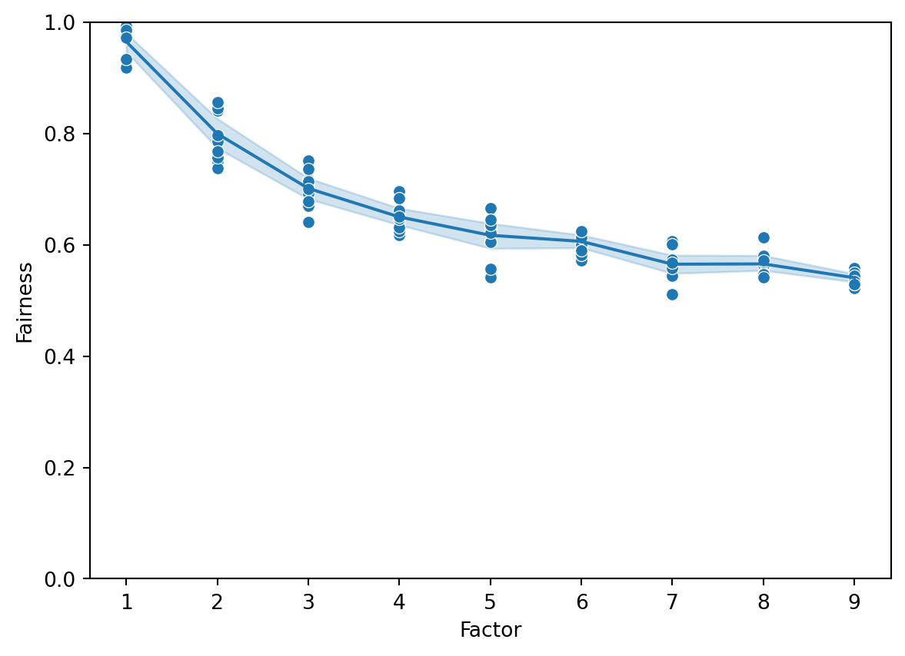

A set of graphs (realizations of a particular graph model)
A one-parameter family of experiments
Preamble
Code
from exps import*import copyn_reps =100# set this to 10000 when generating final results!def run_experiment_batch(conf): result = {}for (k, params) in conf.items(): params = copy.copy(params) params["ic_result"] = run_experiment(params) result[k] = paramsreturn resultdef figure_1(params): c1, c2 = split_result_by_communities(params["ic_result"], params) plt.figure()# FIXME THESE CHECKS SHOULD BE ON NODES TO DELETE hist(list(x for x in c1 if x >0)) # not in params.get("nodes_to_delete", []))) hist(list(x for x in c2 if x >0)) # not in params.get("nodes_to_delete", []))) plt.xlabel("Access probability") plt.ylabel("Frequency") plt.show()def figure_2(conf): x_values_1 = [] x_values_2 = [] y_values_1 = [] y_values_2 = []for (k, v) in conf.items(): c1, c2 = split_result_by_communities(v["ic_result"], v)# FIXME THESE CHECKS SHOULD BE ON NODES TO DELETE c1 = numpy.mean(list(x for x in c1 if x >0)) c2 = numpy.mean(list(x for x in c2 if x >0)) x_values_1.append(v["factor"]) x_values_2.append(v["factor"]) y_values_1.append(c1) y_values_2.append(c2) plt.figure() sns.lineplot(x = x_values_1, y = y_values_1, estimator = numpy.mean, ci =95) sns.lineplot(x = x_values_2, y = y_values_2, estimator = numpy.mean, ci =95) sns.scatterplot(x = x_values_1, y = y_values_1) sns.scatterplot(x = x_values_2, y = y_values_2) plt.xlabel("Factor") plt.ylabel("Access") plt.show()def figure_3(conf): x_values = [] y_values = []for (k, v) in conf.items(): c1, c2 = split_result_by_communities(v["ic_result"], v) c1 = numpy.mean(c1) c2 = numpy.mean(c2) f =min(c1, c2) /max(c1, c2) x_values.append(v["factor"]) y_values.append(f) plt.figure() sns.lineplot(x = x_values, y = y_values, estimator = numpy.mean, ci =95) sns.scatterplot(x = x_values, y = y_values) plt.xlabel("Factor") plt.ylabel("Fairness") plt.legend("") plt.show()k = (5, graphs[0]["files"][0])def run_and_plot(conf): r = run_experiment_batch(conf) figure_1(r[k]) figure_2(r) figure_3(r)
Experiment 1: Overseeding
Code
def configure_experiment_1(factors, graphs): result = {} params =dict( n1 =1000, n2 =1000)for f in factors:for g in graphs:# n = read_graph(g) params["seed1"] = f *0.1 params["seed2"] =0.1 params["graph"] = g params["seeds"] = set_seeds(params) params["factor"] = f params["graph_name"] = g params["alpha"] =0.1 params["reprs"] = n_reps params["communities"] = [list(range(0, 1000)), list(range(1000, 2000))] result[(f, g)] = copy.copy(params)return resultfull_params_1 = configure_experiment_1(list(range(1,10)), graphs[0]["files"])run_and_plot(full_params_1)
Experiment 2: Deletions
Code
import osdef delete_nodes_from_network(network, nodes_to_delete): network = read_graph(network) edge_list = graph_to_edge_list(network)for n in nodes_to_delete: network[n] = [] network =list(list(e for e in l if e notin nodes_to_delete)for l in network) n = temp_name(".txt") write_graph(network, n)return ndef configure_experiment_2(factors, graphs): result = {} params =dict( n =1000, n1 =1000, n2 =1000)for f in factors:for g in graphs:# n = read_graph(g) params["seed1"] =0.1 params["seed2"] =0.1 nodes_to_delete =set(set_seeds(dict( n1 =1000, n2 =1000, seed1 =0.1, seed2 =0.1* f))) params["nodes_to_delete"] = nodes_to_delete network = delete_nodes_from_network(g, nodes_to_delete) params["graph"] = network params["seeds"] = set_seeds(params) params["factor"] = f params["graph_name"] = g params["alpha"] =0.1 params["reprs"] = n_reps params["communities"] = [list(range(0, 1000)), list(range(1000, 2000))] result[(f, g)] = copy.copy(params)return result#full_params_2 = configure_experiment_2(# [5], [graphs[0]["files"][0]])full_params_2 = configure_experiment_2(list(range(1,10)), graphs[0]["files"])run_and_plot(full_params_2)

Source Code
---title: "Figure 4, etc"---Each result "row" is based off:1. A set of graphs (realizations of a particular graph model)2. A one-parameter family of experiments# Preamble```{python}from exps import*import copyn_reps =100# set this to 10000 when generating final results!def run_experiment_batch(conf): result = {}for (k, params) in conf.items(): params = copy.copy(params) params["ic_result"] = run_experiment(params) result[k] = paramsreturn resultdef figure_1(params): c1, c2 = split_result_by_communities(params["ic_result"], params) plt.figure()# FIXME THESE CHECKS SHOULD BE ON NODES TO DELETE hist(list(x for x in c1 if x >0)) # not in params.get("nodes_to_delete", []))) hist(list(x for x in c2 if x >0)) # not in params.get("nodes_to_delete", []))) plt.xlabel("Access probability") plt.ylabel("Frequency") plt.show()def figure_2(conf): x_values_1 = [] x_values_2 = [] y_values_1 = [] y_values_2 = []for (k, v) in conf.items(): c1, c2 = split_result_by_communities(v["ic_result"], v)# FIXME THESE CHECKS SHOULD BE ON NODES TO DELETE c1 = numpy.mean(list(x for x in c1 if x >0)) c2 = numpy.mean(list(x for x in c2 if x >0)) x_values_1.append(v["factor"]) x_values_2.append(v["factor"]) y_values_1.append(c1) y_values_2.append(c2) plt.figure() sns.lineplot(x = x_values_1, y = y_values_1, estimator = numpy.mean, ci =95) sns.lineplot(x = x_values_2, y = y_values_2, estimator = numpy.mean, ci =95) sns.scatterplot(x = x_values_1, y = y_values_1) sns.scatterplot(x = x_values_2, y = y_values_2) plt.xlabel("Factor") plt.ylabel("Access") plt.show()def figure_3(conf): x_values = [] y_values = []for (k, v) in conf.items(): c1, c2 = split_result_by_communities(v["ic_result"], v) c1 = numpy.mean(c1) c2 = numpy.mean(c2) f =min(c1, c2) /max(c1, c2) x_values.append(v["factor"]) y_values.append(f) plt.figure() sns.lineplot(x = x_values, y = y_values, estimator = numpy.mean, ci =95) sns.scatterplot(x = x_values, y = y_values) plt.xlabel("Factor") plt.ylabel("Fairness") plt.legend("") plt.show()k = (5, graphs[0]["files"][0])def run_and_plot(conf): r = run_experiment_batch(conf) figure_1(r[k]) figure_2(r) figure_3(r)```# Experiment 1: Overseeding```{python}def configure_experiment_1(factors, graphs): result = {} params =dict( n1 =1000, n2 =1000)for f in factors:for g in graphs:# n = read_graph(g) params["seed1"] = f *0.1 params["seed2"] =0.1 params["graph"] = g params["seeds"] = set_seeds(params) params["factor"] = f params["graph_name"] = g params["alpha"] =0.1 params["reprs"] = n_reps params["communities"] = [list(range(0, 1000)), list(range(1000, 2000))] result[(f, g)] = copy.copy(params)return resultfull_params_1 = configure_experiment_1(list(range(1,10)), graphs[0]["files"])run_and_plot(full_params_1)```# Experiment 2: Deletions```{python}import osdef delete_nodes_from_network(network, nodes_to_delete): network = read_graph(network) edge_list = graph_to_edge_list(network)for n in nodes_to_delete: network[n] = [] network =list(list(e for e in l if e notin nodes_to_delete)for l in network) n = temp_name(".txt") write_graph(network, n)return ndef configure_experiment_2(factors, graphs): result = {} params =dict( n =1000, n1 =1000, n2 =1000)for f in factors:for g in graphs:# n = read_graph(g) params["seed1"] =0.1 params["seed2"] =0.1 nodes_to_delete =set(set_seeds(dict( n1 =1000, n2 =1000, seed1 =0.1, seed2 =0.1* f))) params["nodes_to_delete"] = nodes_to_delete network = delete_nodes_from_network(g, nodes_to_delete) params["graph"] = network params["seeds"] = set_seeds(params) params["factor"] = f params["graph_name"] = g params["alpha"] =0.1 params["reprs"] = n_reps params["communities"] = [list(range(0, 1000)), list(range(1000, 2000))] result[(f, g)] = copy.copy(params)return result#full_params_2 = configure_experiment_2(# [5], [graphs[0]["files"][0]])full_params_2 = configure_experiment_2(list(range(1,10)), graphs[0]["files"])run_and_plot(full_params_2)```